Laboratory for Autonomy, Control, and Intelligent Transportation Systems
LACITS is a research lab in the
Department of Mechanical, Industrial, and Aerospace Engineering
at Concordia University. Our research program aims to advance safe, trustworthy, and human-centered autonomy for autonomous vehicles, robotics, and AI-enabled cyber-physical systems.
Our current research arc involves different aspects of developing complex and cutting-edge solutions that integrate perception, state estimation, planning, control, decision-making, and AI-embodied learning with the goal of autonomous systems being able to execute multi-layered tasks in unstructured and dynamic environments.
A key element of our work is that meeting the performance requirement in autonomy is insufficient, and that autonomy must also be resilient, interpretable, and aligned with human cognitive and safety expectations. We are developing the control-theoretic foundations and merging them with embodied AI techniques to develop safe, computationally efficient algorithms with performance, reliability, and trust guarantees.
These are thoroughly tested by matching theoretical, simulation, and physical experiments to establish the future generation of socially-aware robotic systems that can build trust in other agents and humans in the environment.
Safe, trustworthy, and human-centered autonomy for intelligent transportation and robotic systems.
News
Sep 2025 Dr. Taghavifar was named among the World’s Top 2% Scientists, following previous inclusion in 2024, 2023, 2022, 2021, and 2020 .
Sep 2025 Dr. Taghavifar received external funding from the Canada-ASEAN Scholarships and Educational Exchanges for Development (SEED) Program.
Oct 2025 Amir Afsharinejad defended his MASc thesis on “Robust LPV Path-Tracking Control for Autonomous Ground Vehicles.”
Jun 2025 Bao Ma defended his MASc thesis on “Detection of Dangerous Driving Behaviors using Multi-Dimensional Data-Driven Methodology.”
Dec 2024 Erfan Doroudian defended his MASc thesis on “Integrating Vision-Language Models with Reinforcement Learning for Human-Aligned Decision-Making of Autonomous Vehicles.”
Sep 2024 Dr. Taghavifar served as the Conference Co-Chair for Workshops/Tutorials at IEEE ITSC 2024 in Edmonton, September 24–27, 2024. Erfan Doroudian and Victor Rasidescu also attended the conference and presented their papers.
Jul 2024 Dr. Taghavifar has been elevated to the IEEE Senior Member level.
Jul 2024 Victor Rasidescu defended his MASc thesis on “Socially Aware Path Planning for Autonomous Road Vehicles.”
Mar 2023 Dr. Taghavifar was awarded the NSERC Discovery Grant for “A Resilient Framework for Intelligent Navigation and Energy Management of Future Multi-Level Electrified Autonomous Vehicles” together with the Discovery Launch Supplement. [NSERC Award Page]
Sep 2022 LACITS activities formally started at Concordia University with new research directions in autonomy, robotics, and control.
Aug 2022 Dr. Taghavifar has joined the Department of Mechanical, Industrial, and Aerospace Engineering of Concordia University
Featured Projects
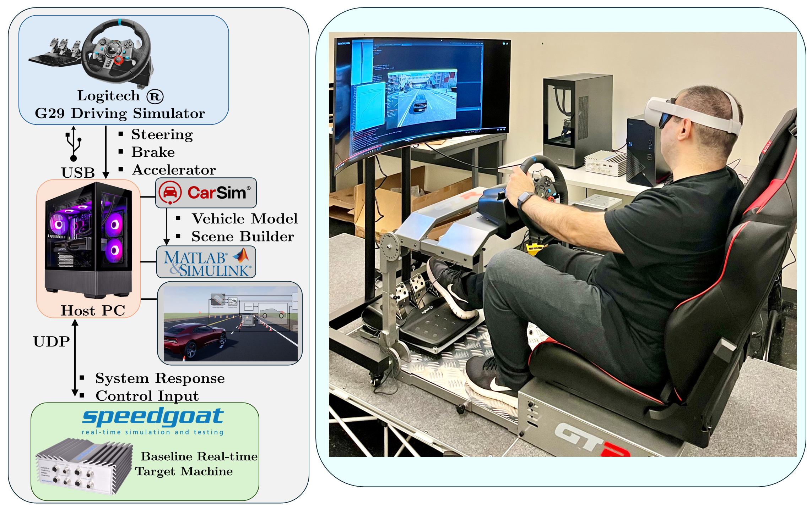
Human- and Hardware-in-the-Loop and Real-Time Simulation Platform for Human-Aware Cognitive Systems in CAV
This platform enables the development and validation of human-aware and cognitive AI-enabled navigation systems through integrated driving simulation, immersive virtual reality, and real-time control testing.
The setup integrates MATLAB/Simulink, Vehicle Dynamics Blockset, Automated Driving Toolbox, Simulink 3D Animation, CarSim, Speedgoat, and the Meta Quest 2 virtual reality headset for immersive and interactive experimentation.
It supports human-in-the-loop and hardware-in-the-loop studies for motion control, decision-making, driver interaction, and safety-oriented autonomy under realistic and dynamically changing scenarios.
Embodied AI for Trustworthy Human-Aware Robot Navigation
This project develops embodied AI frameworks for quadruped and future biped robots, with an emphasis on trustworthy, human-aware, and socially compliant navigation in shared environments.
Our work integrates vision-language-action models with lightweight safety filters, perception modules, sensor fusion, and real-time motion generation so that robots can interpret human-centered tasks while preserving safe and reliable behavior during deployment.
The platform also supports socially aware navigation, human trajectory understanding, and scene-aware autonomy using onboard sensing and robot perception pipelines, with the broader goal of improving trust, comfort, and reliability in human–robot interaction.
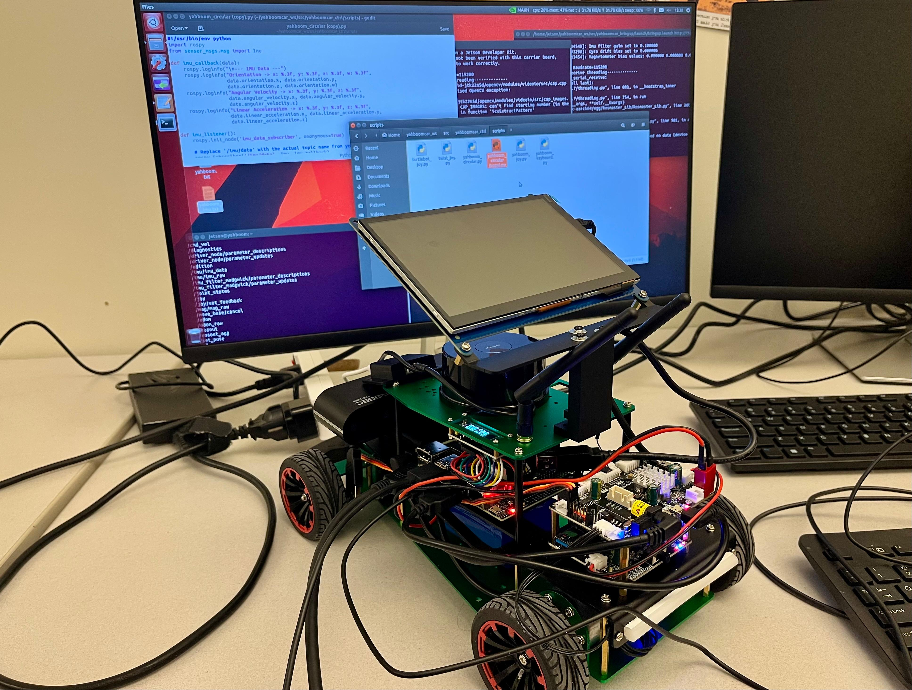
Networked Embodied Intelligence for Nonholonomic Multi-Robot Systems
This project develops cyber-physical frameworks for car-like nonholonomic mobile robots operating as networked multi-agent systems, with emphasis on perception, localization, control, and experimental validation.
Our work integrates SLAM, 3D vision and perception pipelines, observer-based estimation, fault-tolerant control, and cooperative navigation to enable reliable autonomy in dynamically changing environments.
The platform supports rigorous experimental testing of distributed and networked control strategies, allowing us to study multi-robot coordination, platooning, resilience, and trustworthy autonomy on physically deployed robotic systems.
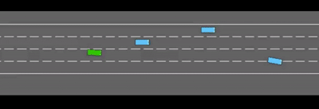
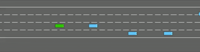
Vision-Language-Action for Cooperative and Trustworthy Autonomous Driving
This project develops vision-language-action frameworks for autonomous driving, with emphasis on interpretable decision-making, cooperative behavior, and safe action generation in complex traffic scenarios.
Our work studies how visual scene understanding, language-conditioned reasoning, and action policies can be integrated with reinforcement learning and control to support both single-vehicle and multi-agent driving tasks.
The broader objective is to enable trustworthy and human-aware autonomy in interactive traffic settings, including cooperative maneuvers such as corridor opening, socially compliant response, and decision-to-action pipelines that can be rigorously evaluated in simulation and future real-world platforms.
Research
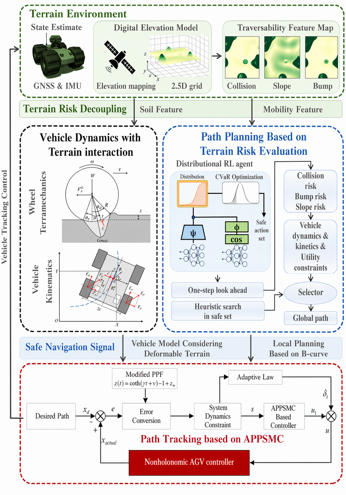
Safe and Robust Terrain Vehicle Navigation Based on Risk-Aware Path-Planning and Control
This work presents a hierarchical framework for autonomous terrain vehicle navigation that jointly addresses safe global path planning and robust local path tracking under uncertain off-road conditions.
The approach combines risk-aware distributional reinforcement learning with CVaR-based optimization for terrain-aware route selection, while the lower-level controller integrates terramechanics and adaptive prescribed-performance sliding mode control to compensate for wheel slip, modeling uncertainty, and external disturbances.
The framework is particularly relevant to safety-critical autonomous operations in deformable and unstructured environments, including off-road robotics, precision agriculture, and planetary exploration.
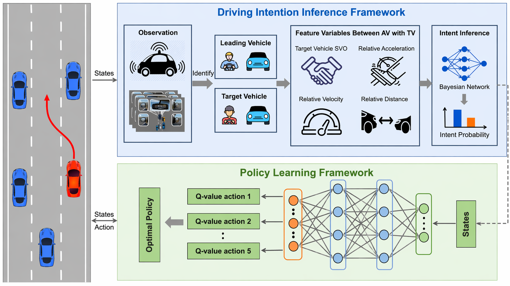
Socially-Aware Autonomous Driving: Inferring Yielding Intentions for Safer Interactions
Jing Wang, Yan Jin, Hamid Taghavifar, Fei Ding, and Chongfeng Wei
arXiv preprint, 2025
This work develops a socially-aware decision-making framework for autonomous lane-change maneuvers by explicitly inferring the yielding and passing intentions of surrounding human-driven vehicles.
The approach integrates Social Value Orientation into a Bayesian Network for intention estimation and combines the resulting probabilistic social inference with a Deep Q-Network policy for autonomous driving decision-making.
Evaluated in simulated highway lane-change scenarios, the framework improves safety, efficiency, and interaction awareness by enabling autonomous vehicles to better interpret and respond to surrounding traffic behavior.
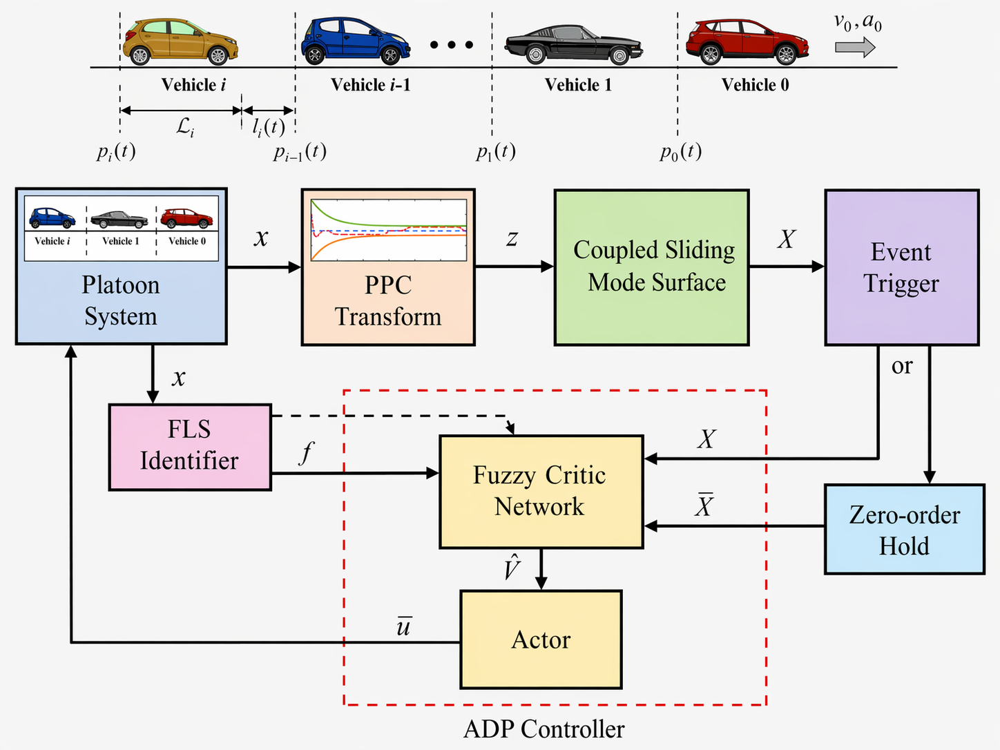
Event-Triggered Adaptive Optimal Control of Vehicular Platoons via Fuzzy ADP With Prescribed Performance
Ziao Wang, Jing Na, Hamid Taghavifar, Jing Zhao, Chuan Hu, and Ge Guo
IEEE Transactions on Intelligent Transportation Systems, 2025
This work develops an event-triggered adaptive optimal control framework for connected vehicular platoons that jointly addresses safety, control optimality, and communication efficiency.
The approach integrates fuzzy adaptive dynamic programming with prescribed performance control and a distributed event-triggered mechanism, enabling platoon regulation under actuator saturation, disturbances, and nonlinear vehicle dynamics.
The resulting framework is relevant to intelligent transportation systems and autonomous vehicle coordination, with emphasis on safe inter-vehicle spacing, string stability, robust optimal control, and reduced communication burden in connected platooning.
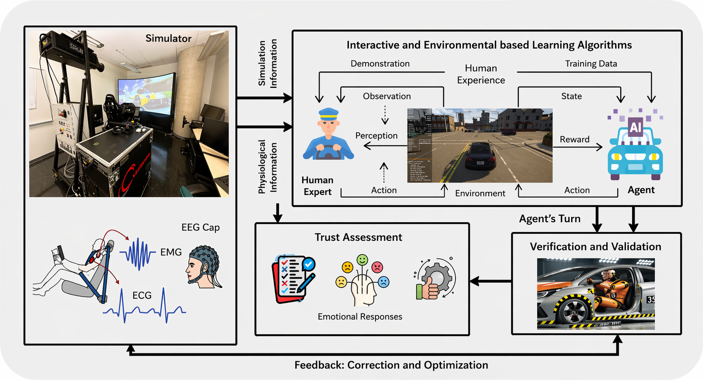
No One at the Wheel? Advancing Reliability and Trust for the Autonomous Driving Era
Hamid Taghavifar, Arash Mohammadi, Erfan Doroudian, Tiago H. Falk, Ming Hou, and Konstantinos N. Plataniotis
IEEE Reliability Magazine, 2025
This article discusses reliability and trust as two central requirements for the deployment of autonomous vehicles in mixed-traffic environments.
It presents the TRUSTEDrive framework, which combines expert driver demonstrations, explainable AI, human-in-the-loop feedback, and visio-psycho-physiological data to promote transparent, trustworthy, and human-centered autonomous driving.
The work is particularly relevant to intelligent transportation systems and autonomous driving, with emphasis on public acceptance, interpretability, reliability, and safer interaction between automated vehicles and human road users.
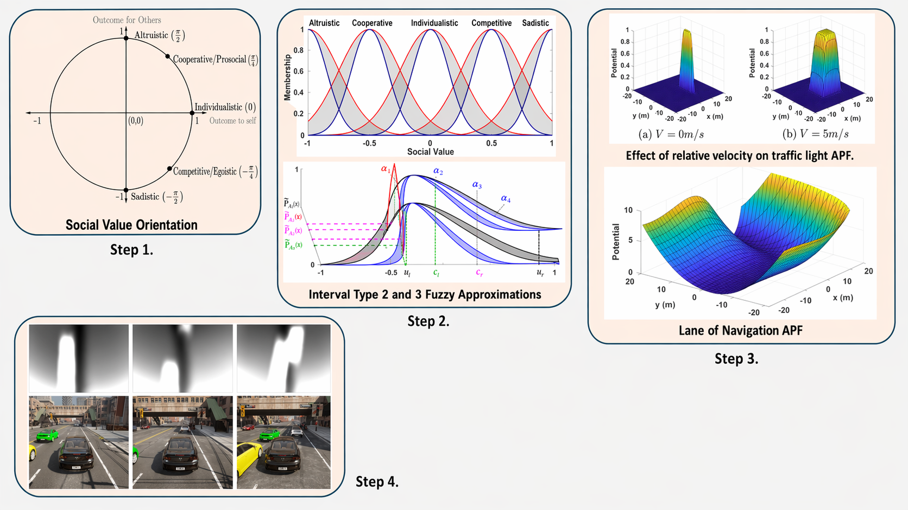
Socially Intelligent Path-Planning for Autonomous Vehicles Using Type-2 Fuzzy Estimated Social Psychology Models
Victor Rasidescu and Hamid Taghavifar
IEEE Access, 2024
This work develops a socially aware path-planning framework for autonomous vehicles by integrating social value orientation within artificial potential fields and estimating road-user behavior through Type-2 fuzzy logic.
The approach enables autonomous vehicles to interpret pedestrian and driver social cues in real time, adapt navigation behavior accordingly, and improve interaction safety and efficiency in mixed-traffic urban environments.
Validated in CARLA-based driving scenarios, the framework improves social acceptability, motion smoothness, and path-planning robustness, supporting more human-aware and trustworthy autonomous driving in intelligent transportation systems.
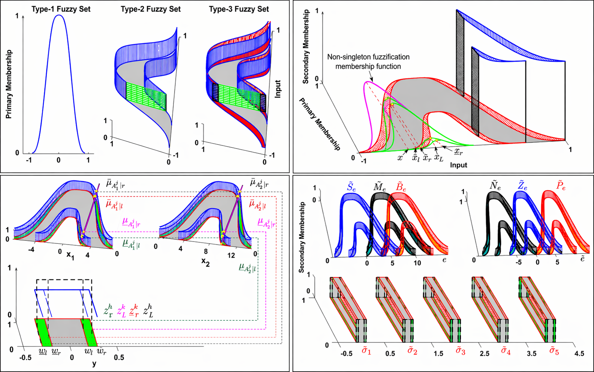
T3-ANFIS: Type-3 Adaptive Neuro-Fuzzy Inference System With a Noniterative Learning Algorithm
Ardashir Mohammadzadeh, Khalid A. Alattas, Wen-Fang Xie, Hamid Taghavifar, Chunwei Zhang, and Rathinasamy Sakthivel
IEEE Transactions on Cybernetics, 2025
This work presents a simplified type-3 adaptive neuro-fuzzy inference system with a noniterative learning algorithm, designed to improve computational efficiency, interpretability, and robustness in uncertain and noisy environments.
The framework introduces new type-3 fuzzy membership functions, simplified type-reduction, and a correntropy Kalman filter-based learning mechanism that adaptively updates both rule and membership parameters while improving robustness against impulsive and non-Gaussian noise.
Evaluations on real data and navigation-oriented filtering problems show that the proposed T3-ANFIS improves modeling accuracy and estimation robustness, supporting more reliable intelligent systems and online learning architectures.
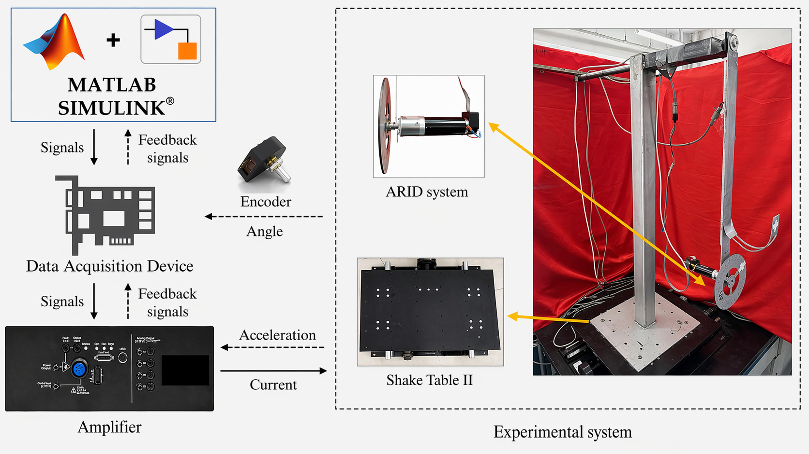
An Experimental Self-Structuring Type-3 Fuzzy Vibration Control: H∞-Based Robustness and Online Dynamic Modeling
Chunwei Zhang, Tianpeng Li, Ardashir Mohammadzadeh, Hamid Taghavifar, and Rathinasamy Sakthivel
Journal of Sound and Vibration, 2026
This work presents an experimental vibration control framework based on a self-structuring Type-3 Fuzzy Logic System for uncertain nonlinear structural dynamics.
The approach combines fractional-order online dynamic modeling, non-singleton fuzzification for measurement noise handling, and an H∞-based adaptive compensator to improve robustness against disturbances, parameter variations, and modeling uncertainty.
Validated on an active rotary inertia driver (ARID) pendulum platform, the proposed method demonstrates strong experimental and simulation performance, showing improved vibration suppression, adaptive rule evolution, and practical feasibility for intelligent control of uncertain dynamical systems.
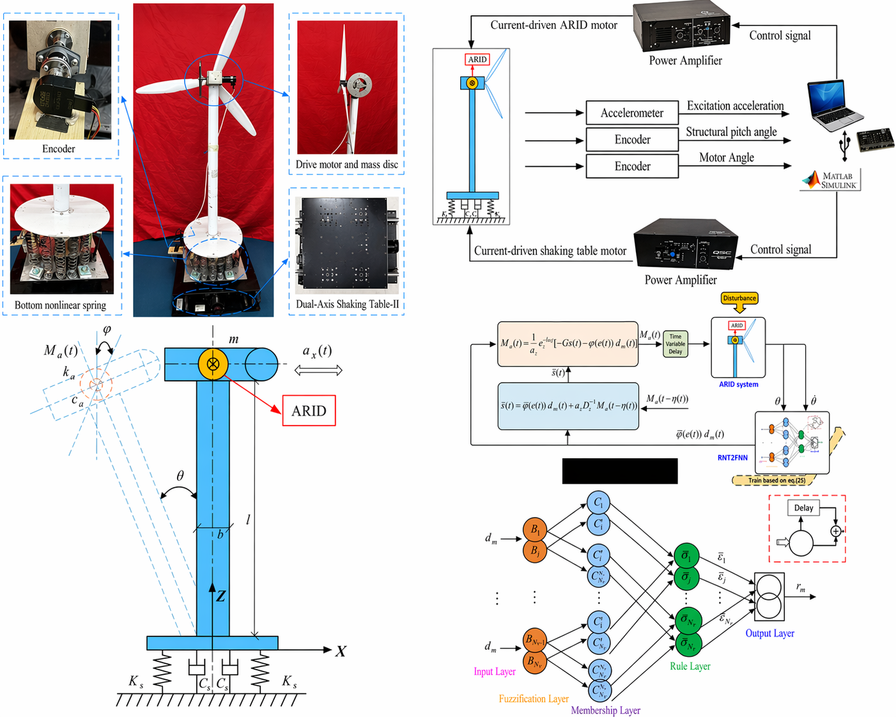
Seismic/Wind Response Control of Offshore Wind Turbine Tower by a Type-2 Fuzzy Active Rotary Inertia Driver: Theory and Practice
This work develops an active vibration control framework for offshore wind turbine towers using an Active Rotary Inertia Driver to suppress pitch motion under seismic, wind, and wave disturbances.
The proposed controller is built on a recurrent non-singleton type-2 sequential fuzzy neural network, combined with fractional-order online identification and Lyapunov-Krasovskii-based stability analysis to address time delays, sensor noise, structural uncertainty, and nonlinear dynamics.
Simulation and scaled experimental results demonstrate improved vibration attenuation, robustness, and practical feasibility, supporting intelligent control of uncertain offshore energy structures under realistic operating conditions.
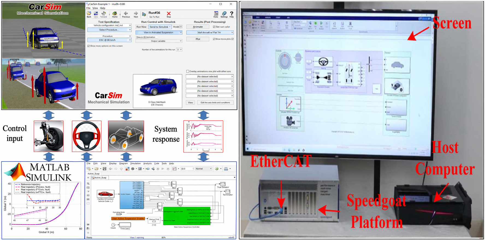
Adaptive Synthesized Fault-Tolerant Autonomous Ground Vehicle Control With Guaranteed Performance and Saturated Input
Chuan Hu, Hamid Taghavifar, Xin Liao, Jing Na, Yu Zhang, and Yechen Qin
IEEE Transactions on Vehicular Technology, 2024
This work develops an adaptive synthesized fault-tolerant motion control framework for autonomous ground vehicles that simultaneously addresses path tracking, roll dynamics, actuator failures, and input saturation.
The proposed controller integrates finite-time prescribed performance control, a modified Nussbaum-type function, barrier Lyapunov design, and a simplified adaptive neural network term to guarantee constrained transient behavior under uncertain nonlinear vehicle dynamics.
Validated through high-fidelity Simulink-CarSim simulations and hardware-in-the-loop testing, the framework demonstrates strong real-time feasibility and improved safety-oriented control performance for autonomous driving under faulty and saturated actuation conditions.
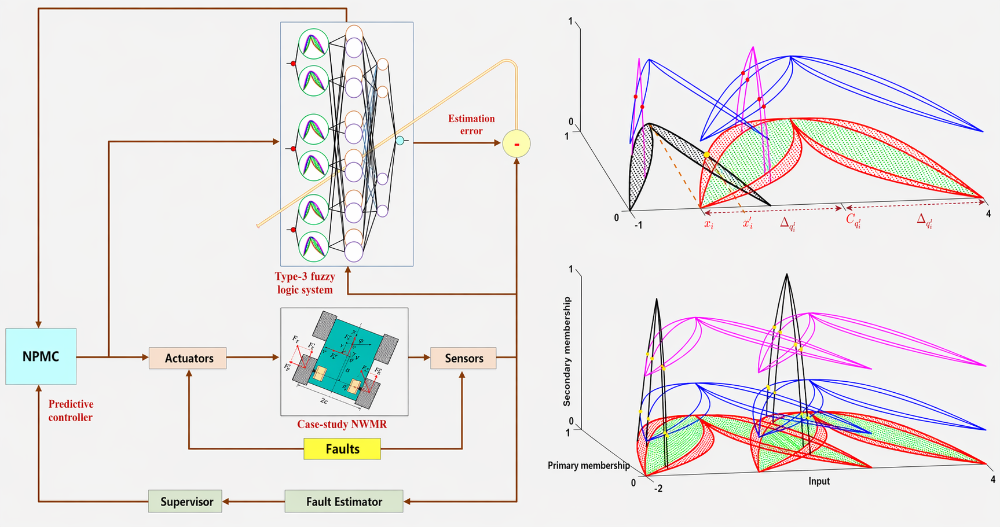
A Fast Nonsingleton Type-3 Fuzzy Predictive Controller for Nonholonomic Robots Under Sensor and Actuator Faults and Measurement Errors
Ardashir Mohammadzadeh, Hamid Taghavifar, Youmin Zhang, and Wenjun Zhang
IEEE Transactions on Systems, Man, and Cybernetics: Systems, 2024
This work develops a fast nonlinear predictive control framework for nonholonomic wheeled mobile robots operating under uncertain dynamics, wheel slippage/skid, actuator faults, sensor faults, and measurement errors.
The approach integrates a type-3 fuzzy logic system for online nonlinear modeling, a new nonsingleton fuzzification strategy for handling noisy and faulty sensor data, and an analytical predictive controller that avoids iterative optimization to achieve faster computation.
Extensive simulations and experimental validations show effective path tracking, robust fault compensation, and reliable performance for constrained nonholonomic robotic systems under realistic disturbances and uncertainties.
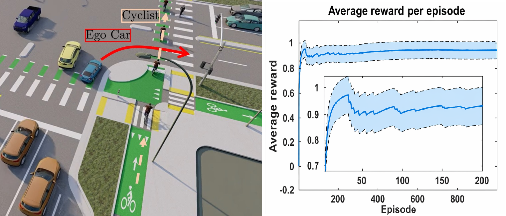
Socially Intelligent Reinforcement Learning for Optimal Automated Vehicle Control in Traffic Scenarios
Hamid Taghavifar, Chongfeng Wei, and Leyla Taghavifar
IEEE Transactions on Automation Science and Engineering, 2025
This work develops a socially intelligent reinforcement learning framework for automated vehicle decision-making in mixed traffic scenarios involving interaction with vulnerable road users such as bicyclists.
The proposed method integrates the SARSA algorithm with a customized Social Value Orientation model and a collision-risk-aware reward formulation, enabling the ego vehicle to balance efficiency, collision avoidance, and socially aware behavior.
Extensive simulations demonstrate improved safety, reduced collision risk, and more human-aware decision-making compared with conventional baselines, supporting intelligent and human-centric autonomous driving in interactive traffic environments.
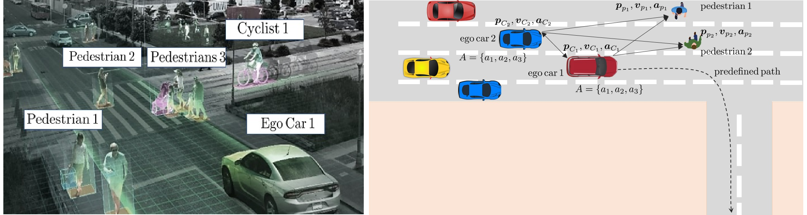
Behaviorally-Aware Multi-Agent RL With Dynamic Optimization for Autonomous Driving
Hamid Taghavifar, Chuan Hu, Chongfeng Wei, Ardashir Mohammadzadeh, and Chunwei Zhang
IEEE Transactions on Automation Science and Engineering, 2025
This work presents a behaviorally-aware multi-agent reinforcement learning architecture for autonomous vehicle navigation in complex urban traffic environments involving interactions with pedestrians and other vehicles.
The proposed framework integrates a Social Value Orientation model into a model-free SARSA learning scheme, together with logistic-regression-based collision risk assessment and a dynamic optimizer that adaptively tunes learning and exploration for improved convergence.
Extensive simulation results show reduced collision risk, improved average rewards, and more socially interpretable decision-making, supporting safe, efficient, and human-aware autonomous driving in shared urban environments.
For a more complete list of publications, please visit
Google Scholar.
Description: Students will be able to explain RL problem formulation including bandits and MDPs, and relate policies, returns, and value functions through Bellman equations. They will derive and apply core model-free RL algorithms including Monte Carlo, TD learning, SARSA, and Q-learning, and understand on-policy versus off-policy learning and exploration-exploitation tradeoffs. The course also emphasizes implementation and evaluation in MATLAB and Python on representative control problems, and connects RL to optimal and feedback control through case studies such as LQR, while discussing discretization, constraints, and safe exploration.
Description: Kinematics and dynamics of nonholonomic systems, including d’Alembert principle, Euler-Lagrange equations, equations of motion with Lagrangian multipliers, reactions of ideal nonholonomic constraints, Chaplygin systems, and bifurcation and stability analysis. The course also covers nonlinear control design of nonholonomic systems, including kinematic, dynamic, and force control, controller design under uncertainty, and applications to wheeled mobile robots and walking robots.
Description: This course covers the unified treatment of measurement of physical quantities; static and dynamic characteristics of instruments including calibration, linearity, precision, accuracy, bias, and sensitivity drift; sources of errors; error analysis; experiment planning; data analysis techniques; principles of transducers; signal generation, acquisition and processing; and systems for measuring position, velocity, acceleration, pressure, force, stress, temperature, flow-rate, and proximity detection. The course includes demonstrations of various instruments.
Description: Basics of modern electronic navigation systems, history of air navigation, earth coordinate and mapping systems, theory and analysis of modern navigation instrumentation, communication and radar systems, approach aids, airborne systems, transmitters, antenna coverage, noise and losses, target detection, digital processing, display systems, and demonstrations using a flight simulator.
Description: This course focuses on writing programs using assignment and sequences; variables and types; operators and expressions; conditional and repetitive statements; input and output; file access; functions; program structure and organization; pointers and dynamic memory allocation; introduction to classes and objects; and mechanical and industrial engineering applications.
Dr. Taghavifar is the LACITS lab director and an Assistant Professor with the Department of Mechanical, Industrial and Aerospace Engineering (MIAE) at Concordia University, Montreal, Canada.
LACITS – Laboratory for Autonomy, Control, and Intelligent Transportation Systems
EV Building, Room EV 11.170
Engineering, Computer Science and Visual Arts Integrated Complex
Concordia University
1515 Ste-Catherine St. W.
Montreal, QC H3G 2W1
Canada